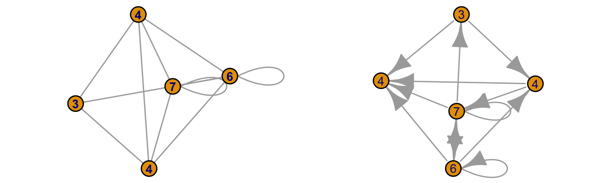

Basics
- ネットワーク：ものごとのつながりを表したもの、相互作用が生じるシステムのこと.
例：情報ネットワーク, 社会ネットワーク, 遺伝子間ネットワーク - グラフ：ネットワークを点と線で抽象化（数学的にモデル化）したもの.その理論体系をグラフ理論と呼ぶ.
ネットワークの用語
| 単語 | 意味 | |
|---|---|---|
| Node/Vertex | ノード/節点（バーテックス） | 変数を代表する点 |
| Edge/Link | 辺/リンク | ノード間のつながりを示す |
| Degree | 次数 | ノードが持つリンクの数 |
| adjacency matrix | 隣接行列 | n x nの正方行列 |
Code
library(igraph)
mat = matrix(
c(c(1,0,0,1,0),
c(1,0,1,0,0),
c(0,0,0,1,0),
c(1,1,0,1,0),
c(1,1,1,1,0)),
nrow=5, ncol=5
)
g = igraph::graph_from_adjacency_matrix(mat)
par(mar = c(0, 0, 0, 0), mfrow=c(1,2))
plot(g,
vertex.size=20,
vertex.label = degree(g),
vertex.label.cex=0.6,
vertex.label.family="Arial",
vertex.label.font = 2,
loop.size = 2,
edge.arrow.mode=0)
plot(g,
vertex.size=20,
vertex.label = degree(g),
vertex.label.cex=0.6,
vertex.label.family="Arial",
vertex.label.font = 1,
loop.size = 2,
edge.arrow.mode=2)左が方向性を持たない無向グラフ、右が有向グラフ.
グラフの種類
| 単語 | 意味 | |
|---|---|---|
| Undirected graph | 無向グラフ | つながりに方向性がないグラフ |
| Directed graph | 有向グラフ | つながりに方向性があるグラフ |
| Connected graph | 連結グラフ | 任意の２ノード間に経路が存在する無向グラフ |
| Disconnected graph | 非連結グラフ | 連結でない無向グラフ |
| Strongly conncted graph | 強連結グラフ | 強連結な有向グラフ.有向グラフでは、いくつかの定義がある |
強連結グラフの例: 任意の２ノード間に双方向の経路が存在する場合
連結/非連結グラフ
非連結グラフにおいて、いくつかの連結グラフに分けられる時、その要素を連結成分と呼ぶ.
ネットワークの特徴量
| 単語 | 意味 | 式（上:無向,下:有向） |
|---|---|---|
| 総ノード数 | ネットワークに含まれるノードの合計 | \(N\) |
| 次数 | ノードiが持つリンクの数 | \(k_i\) \(k_i^in + k_i^out\) |
| 全リンク数 | ネットワークに含まれるリンクの合計 | \(L=\frac{1}{2}\sum k_i\) \(L=\sum k_i\) |
| 平均次数 | あるネットワークにおける次数の平均 | \(\hat{k}=\frac{2L}{N}\) |
| 次数分布 Degree distribution | 各ノードが持ちうる次数の度数分布 | \(p_k = \frac{N_k}{N}\) |